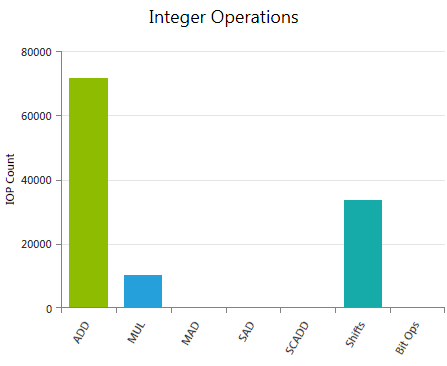
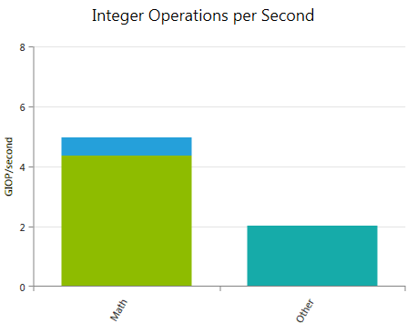

了解已执行的整数运算数量和指令构成，对于为 kernel 给出合理的性能预期估计是一项有用的输入。同时它也是更好地理解许多其他指标和实验的基础。与 实际 FLOPS 实验类似，它的主要价值在于跟踪并评估代码改动带来的性能差异，而不是推导性能受限的真正原因。
在计算能力 1.x 的设备上，32 位整数乘法由于不被原生支持，因此使用多条指令实现。然而 24 位整数乘法通过 __[u]mul24 内建函数得到原生支持。对于受指令限制的 kernel，在可能的情况下使用 __[u]mul24 替代 32 位乘法运算符通常可以提升性能。但在使用 __[u]mul24 反而抑制了编译器优化的情况下，效果可能相反。
在计算能力 2.x 及以上的设备上，32 位整数乘法被原生支持，而 24 位整数乘法则不被原生支持。因此 __[u]mul24 会使用多条指令实现，应避免使用。
整数除法和模运算代价高昂：在计算能力 1.x 的设备上需要数十条指令，在计算能力 2.x 及以上的设备上需要不到 20 条指令。在某些情况下它们可以用位运算替代：如果 n 是 2 的幂，(i/n) 等价于 (i>>log2(n))，(i%n) 等价于 (i&(n-1))；如果 n 是字面常量，编译器会自动完成这些转换。
本文档中对具体汇编指令的引用，指的是硬件的实际指令集架构（ISA），称为 SASS。关于不同 CUDA 计算架构 SASS 汇编指令的描述和完整列表，请参阅 NVIDIA CUDA 工具 cuobjdump 的文档。
整数运算 报告按指令类别分组的已执行整数指令命中数的加权和。所应用的权重可以在数据收集前通过 Activity 页面上的 实验配置 自定义。 根据实际操作和所使用的编译器选项不同，CUDA C 中一条整数指令在汇编代码中可能对应多条指令。所报告的数值是基于已执行的汇编指令，因此数字可能与仅从 CUDA C 代码推断出的预期不一致。可使用 源码视图 页面研究高级代码与汇编代码之间的映射关系。 指标ADD
所有已执行的整数加法（ MUL
所有已执行的整数乘法（ MAD
所有已执行的整数乘加（ SAD
所有已执行的绝对差之和（ SCADD
所有已执行的移位加（ Shifts
所有已执行的移位指令的加权和，涵盖右移（ Bit Ops
所有已执行的整数位运算的加权和。具体包括位域提取（ |
每秒整数运算次数 报告每秒已执行整数指令命中数的加权和。该图表是一个堆叠柱状图，所使用的指令类别与 整数运算 图表完全相同。 指标Math 所有已执行的整数算术指令每秒的加权和。汇总了 整数运算 图表中 ADD、MUL、MAD、SAD 和 SCADD 的各自贡献。 Other 移位指令和位运算每秒的加权和。 |
CUDA C Best Practices Guide 给出了若干优化整数 算术指令 的通用建议：
同时也尽量减少所执行的低吞吐量算术指令数量。CUDA C Programming Guide 给出了各计算能力下所有原生 算术指令 的预期吞吐量列表。
NVIDIA GameWorks Documentation Rev. 1.0.150630 ©2015. NVIDIA Corporation. All Rights Reserved.